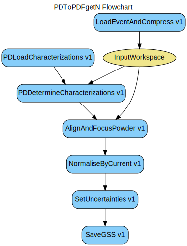

\(\renewcommand\AA{\unicode{x212B}}\)
PDToPDFgetN v1¶
{kind=link}
PDToPDFgetN dialog.¶
Summary¶
The algorithm used converting raw data to pdfgetn input files
See Also¶
Properties¶
Name |
Direction |
Type |
Default |
Description |
|---|---|---|---|---|
Filename |
Input |
string |
Event file. Allowed extensions: [‘_event.nxs’, ‘.nxs.h5’] |
|
MaxChunkSize |
Input |
number |
0 |
Specify maximum Gbytes of file to read in one chunk. Default is whole file. |
FilterBadPulses |
Input |
number |
95 |
Filter out events measured while proton charge is more than 5% below average |
InputWorkspace |
Input |
Handle to reduced workspace |
||
OutputWorkspace |
Output |
Mandatory |
Handle to reduced workspace |
|
CacheDir |
Input |
string |
Directory storing cache files for reuse, in-lieu of repetitive, time-consuming calculations |
|
PDFgetNFile |
Input |
string |
Mandatory |
Output filename. Allowed extensions: [‘.getn’] |
CalibrationFile |
Input |
string |
Allowed extensions: [‘.h5’, ‘.hd5’, ‘.hdf’, ‘.cal’] |
|
CharacterizationRunsFile |
Input |
string |
File with characterization runs denoted. Allowed values: [‘txt’] |
|
FrequencyLogNames |
Input |
str list |
SpeedRequest1,Speed1,frequency,skf1.speed |
Candidate log names for frequency |
WaveLengthLogNames |
Input |
str list |
LambdaRequest,lambda,skf12.lambda,BL1B:Det:TH:BL:Lambda,freq |
Candidate log names for wave length |
RemovePromptPulseWidth |
Input |
number |
0 |
Width of events (in microseconds) near the prompt pulse to remove. 0 disables |
CropWavelengthMin |
Input |
number |
0 |
Crop the data at this minimum wavelength. Overrides LowResRef. |
CropWavelengthMax |
Input |
number |
Optional |
Crop the data at this maximum wavelength. Forces use of CropWavelengthMin. |
Binning |
Input |
dbl list |
0,0,0 |
Positive is linear bins, negative is logorithmic |
ResampleX |
Input |
number |
0 |
Number of bins in x-axis. Non-zero value overrides “Params” property. Negative value means logorithmic binning. |
Description¶
This is a workflow algorithm that creates files suitable as input into PDFgetN.
LoadEventAndCompress v1 if
InputWorkspaceis not providedPDDetermineCharacterizations v1 to determine information from the characterization file
SetUncertainties v1 (
SetError="sqrt")
Workflow¶
Categories: AlgorithmIndex | Workflow\Diffraction
Source¶
Python: PDToPDFgetN.py